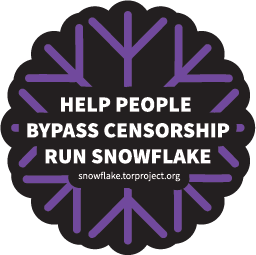
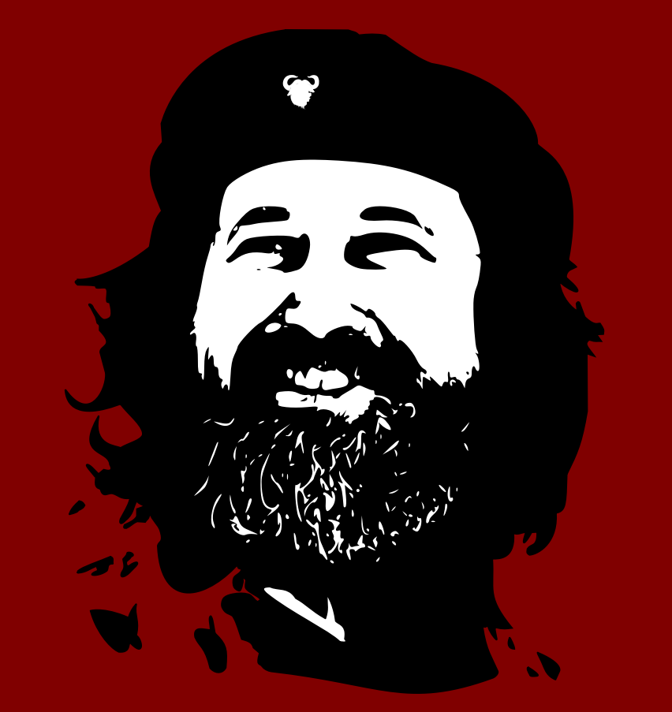
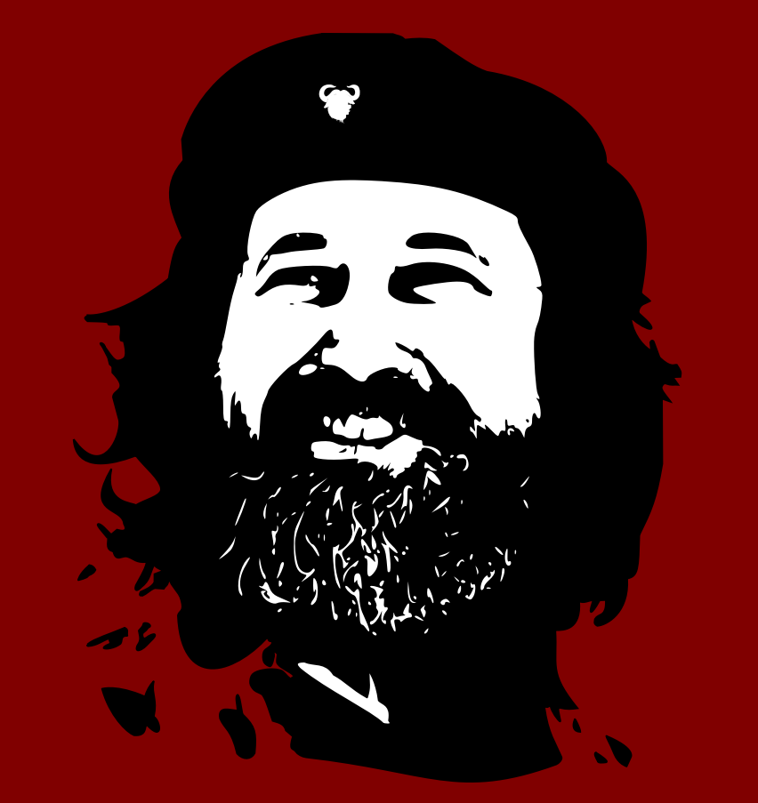
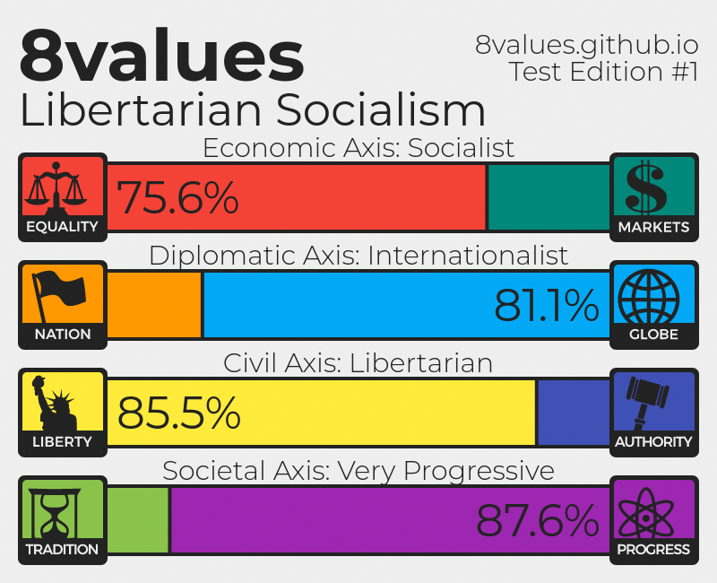
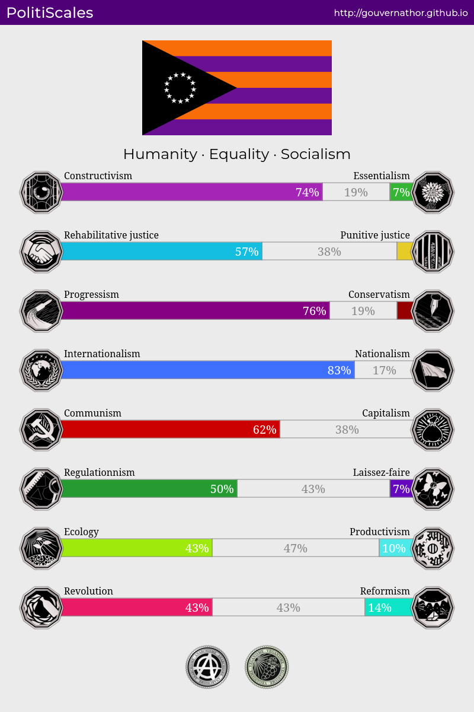

Wrench.
Written and maintained by Wrenne Claude

 



XMR: 442m9bAzPMG7afLH921EqKjeXAfkN5YoHHeocJpUsMWcgBkTupZo4P97rKygMiT8h62Xw1uQhApEoJHxXdJHdX9KRihnRhK (mainnet)
LTC: ltc1qk0sq7tddgh0dmc5fx2httmq2ddqhglq7chezfy (mainnet)
BTC: bc1qwsfa5ruwnagw07mqrqrx5zz4tzc28cl8ptu22x (Segwit P2WPKH)
Arguing that you don't care about the right to privacy because you have nothing to hide is no different than saying you don't care about free speech because you have nothing to say. - Edward Snowden
Hello, reader. I'm Wrenne Claude, a musician by profession and a paranoid freak by hobby.
This is my personal site. It will contain a lot of my work, mostly written (as I host my music elsewhere)
This is also the place where you'll find the Private Internet Usage Bible's 2024 (first) edition. It's my own spin on an online privacy guide.
I don't think PIUB24E will ever be finished, as with more experience and knowledge gained I will update it accordingly.
I'm also thinking about starting a blog here, but I'm not sure. Maybe I should add a roadmap.
I hope you enjoy what follows. I'll try to update this site regularly.
Some info about me
I live in Poland, I play the guitar in the noise rock / post-punk / no-wave revival band Allarme
I used to play in the deathrock groups Eat My Teeth and Marie Laveau.
I also have a solo music project that is a mix of shoegaze and slowcore, some of my favourite genres.
I also play the piano and have some basic knowledge about most western string and percussion instruments.
I've been daily driving GNU/Linux for around 2 years now, I think. I advocate for the Free/Libre and Open Source movements.
My favourite GNU/Linux distros are Gentoo and Nobara, and I proudly stay away from Manjaro. Here's why you should, too.
I don't recommend Windows or Mac OS to anybody. I'm against non-free software that's also blatant spyware.
I'm fascinated by astronomy, I enjoy reading Hawking's works that target the general public.
My favourite bands of all time are Duster, Unwound, Sprain and Swans.
I'm fluent in Polish, English and French, I'm currently learning Japanese. I'd love to learn Hebrew, Thai, Arabic, Russian and German one day.
Let's get political
I'm generally aware of my political views, although I'm pretty uneducated in this field.
I've had my Marxist phase, I've read the manifesto and The Capital, and consider Marx to be a below-average writer.
For some time I associated with the anarcho-syndicalist movement, but realised that adding anything to anarchism kinda
defeats its purpose. Currently I consider myself an anarchist at the core, but achieving true and peaceful anarchy is
going to take some time, and I know I won't see it during my lifetime. That's why I support whatever leftist parties
I agree with in my country. Due to my slight political illiteracy I decided to take some online tests to define my views.
Even though I'm still trying to describe myself politically, maybe you'll understand these charts better:
First up is the 8values test:

Afterwards I took the PolitiScales test:
